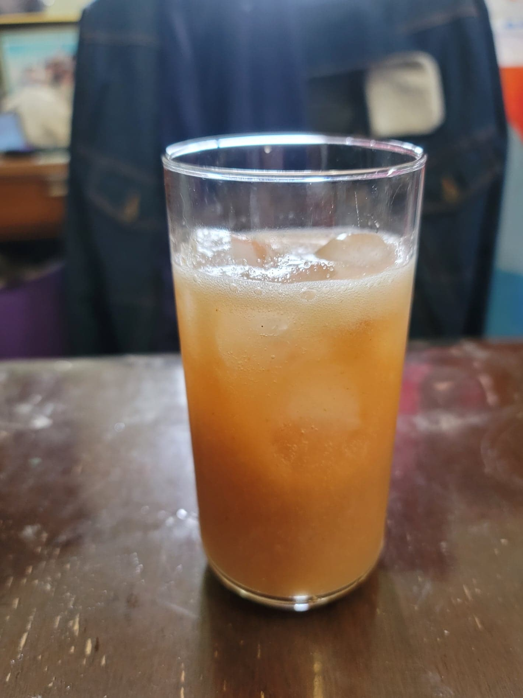

Hawthorn Kombucha

Ingredients:
- 4 cups Kombucha, after 1st fermentation
- 60 g Dried hawthorn
- 2 tbsp Honey, or to taste
Instructions:
- Place the dried hawthorn into a food processor and pulse until chopped finely. Distribute the hawthorn and honey evenly between two 16 oz flip-top bottles. Fill up the remaining space with the kombucha. Let ferment for 3-7 days, or until carbonated to preference. Then refrigerate and serve cold over ice.